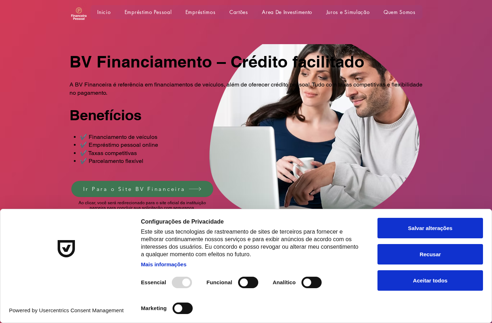
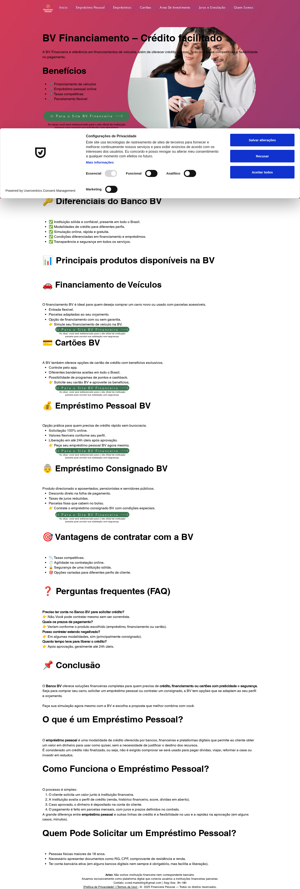

Sistema de Investigação de Marca e Identidade Online
https://www.financeirapessoal.net/bv-financeira
Prioridade: MEDIUM · Cenário: B_AMBIGUOUS_COMMUNICATION · Revisão humana: PENDING
A página em análise configura uma landing page dedicada ('financeirapessoal.net/bv-financeira') voltada à captação ou direcionamento de interessados em crédito da BV Financeira. Embora ostente marca própria no topo e declare no rodapé que não é instituição financeira nem correspondente bancário, o site explora extensivamente os produtos e nome do Banco BV, afirma que este é uma 'instituição parceira' e redireciona os cliques para URLs encurtadas (iz5.xyz) sem transparência quanto ao destino final, sem informar CNPJ ou razão social e disponibilizando apenas contato via Gmail. Esse arranjo gera ambiguidade quanto à autorização e legitimidade da intermediação perante as normas vigentes, demandando revisão humana. [Revisor: CONFIRM] A página 'Financeira Pessoal' opera como plataforma de captação/intermediação de crédito digital, promovendo produtos específicos do Banco BV e afirmando tratar-se de 'instituição parceira' para a qual redireciona o usuário via link intermediário encurtado (iz5.xyz). Embora contenha disclaimer de que não é instituição financeira nem correspondente bancário, explora a marca comercialmente alegando parceria sem divulgar CNPJ, razão social ou comprovação de vínculo formal, configurando ambiguidade de parceria perante o consumidor. A classificação REVIEW_REQUIRED com prioridade MEDIUM é confirmada.


| Ref | Tipo | Local | Conteúdo |
|---|---|---|---|
| E-URL | domain | url | URL final: https://www.financeirapessoal.net/bv-financeira (domínio: www.financeirapessoal.net) |
| E-DISC-001 | text | search_index | Índice de busca (grounding): financeirapessoal.net — **URL:** `https://financeirapessoal.net/` | **Como a marca é utilizada:** Landing page intitulada *"BV Financiamento – Crédito facilitado"*, utilizando arquivo rotulado como `logo bv financeira emprestimo`, promovendo simulação de veículo e crédito pessoal com direcionamento externo | Induz o usuário a erro ao utilizar a marca como se fosse o próprio canal da BV Financeira; omite Razão Social, CNPJ e qualquer informação de credenciamento legal como correspondente bancário perante o Banco Central |
| E-SHOT-VIEWPORT | screenshot | viewport | evidence/C51783870be/attempt-1/viewport.png (sha256 2b295687acdc2ab2…) |
| E-SHOT-FULL | screenshot | page | evidence/C51783870be/attempt-1/fullpage.png (sha256 b7a16a2cd5ae309f…) |
| E-TITLE | title | head | Empréstimo BV Financeira | Financeira Pessoal |
| E-META-1 | meta | head | description: Solicite crédito pessoal rápido e seguro na Financeira Pessoal. Resposta em até 24 horas. |
| E-META-2 | meta | head | og:site_name: Financeira Pessoal |
| E-META-3 | meta | head | og:title: Financeira Pessoal - Crédito Rápido e Seguro |
| E-META-4 | meta | head | og:description: Solicite crédito pessoal online e receba proposta em até 24h. Simples, rápido e seguro. |
| E-META-5 | meta | head | author: Financeira Pessoal |
| E-CANONICAL | meta | head | https://www.financeirapessoal.net/bv-financeira |
| E-HEAD-1 | heading | page | BV Financiamento – Crédito facilitado |
| E-HEAD-2 | heading | page | Benefícios |
| E-HEAD-3 | heading | page | Banco BV – Crédito, Empréstimos e Financiamentos 🚗 |
| E-HEAD-4 | heading | page | |
| E-HEAD-5 | heading | page | 🔑 Diferenciais do Banco BV |
| E-HEAD-6 | heading | page | |
| E-HEAD-7 | heading | page | 📊 Principais produtos disponíveis na BV |
| E-HEAD-8 | heading | page | |
| E-HEAD-9 | heading | page | 🚗 Financiamento de Veículos |
| E-HEAD-10 | heading | page | |
| E-HEAD-11 | heading | page | 💳 Cartões BV |
| E-HEAD-12 | heading | page | |
| E-HEAD-13 | heading | page | 💰 Empréstimo Pessoal BV |
| E-HEAD-14 | heading | page | |
| E-HEAD-15 | heading | page | 👵 Empréstimo Consignado BV |
| E-HDR | text | header | Inicio Empréstimo Pessoal Empréstimos Cartões Area De Investimento Juros e Simulação Quem Somos |
| E-FOLD | text | viewport (acima da dobra) | Inicio Empréstimo Pessoal Empréstimos Cartões Area De Investimento Juros e Simulação Quem Somos BV Financiamento – Crédito facilitado A BV Financeira é referência em financiamentos de veículos, além de oferecer crédito pessoal. Tudo com taxas competitivas e flexibilidade no pagamento. Benefícios ✔️ Financiamento de veículos ✔️ Empréstimo pessoal online ✔️ Taxas competitivas ✔️ Parcelamento flexível Ir Para o Site BV Financeira Ao clicar, você será redirecionado para o site oficial da instituição parceira para concluir sua solicitação com segurança. Banco BV – Crédito, Empréstimos e Financiamentos 🚗 O Banco BV é uma das maiores instituições financeiras do Brasil, reconhecida por oferecer soluções acessíveis em crédito pessoal, financiamento de veículos e empréstimos com diferentes modalidades. Com foco em praticidade e taxas competitivas, a BV é parceira de milhões de brasileiros que buscam realizar sonhos ou organizar a vida financeira. 🔑 Diferenciais do Banco BV |
| E-FTR | text | footer | Aviso: Não somos instituição financeira nem correspondente bancário. Atuamos exclusivamente como plataforma digital que conecta usuários a instituições financeiras parceiras. Contato: ccred.marketing@gmail.com | Seg–Sex, 9h–18h [Política de Privacidade] | [Termos de Uso] - © 2025 Financeira Pessoal — Todos os direitos reservados. |
| E-NAV | nav | header | <https://www.financeirapessoal.net/> | Inicio <https://www.financeirapessoal.net/> | Empréstimo Pessoal <https://www.financeirapessoal.net/empr%C3%A9stimo-pessoal> | Area De Investimento <https://www.financeirapessoal.net/area-de-investimento> | Juros e Simulação <https://www.financeirapessoal.net/juros-e-simulacao> | Quem Somos <https://www.financeirapessoal.net/quem-somos> |
| E-CTA-1 | cta | page | Ir Para o Site BV Financeira <https://iz5.xyz/68b6edd241bbe> |
| E-CTA-2 | cta | page | Ir Para o Site BV Financeira <https://iz5.xyz/68b6edd241bbe> |
| E-CTA-3 | cta | page | Ir Para o Site BV Financeira <https://iz5.xyz/68b6edd241bbe> |
| E-CTA-4 | cta | page | Ir Para o Site BV Financeira <https://iz5.xyz/68b6edd241bbe> |
| E-CTA-5 | cta | page | Ir Para o Site BV Financeira <https://iz5.xyz/68b6edd241bbe> |
| E-IMG-1 | image | header (acima da dobra) | imagem alt='juros e simulação' src=https://static.wixstatic.com/media/46b488_f746ecae232242c08d0f5dbbed9c473e~mv2.png/v1/fill/w_52,h_59,al_c,q_85,usm_0.66_1.00_0.01,enc_avif,quality_auto/logo%20financeira%20pessoal%20(2).png (52x59, acima da dobra) |
| E-TXT-001 | text | page | BV Financiamento – Crédito facilitado |
| E-TXT-002 | text | page | A BV Financeira é referência em financiamentos de veículos, além de oferecer crédito pessoal. Tudo com taxas competitivas e flexibilidade no pagamento. |
| E-TXT-003 | text | page | Ir Para o Site BV Financeira |
| E-TXT-004 | text | page | Ao clicar, você será redirecionado para o site oficial da instituição parceira para concluir sua solicitação com segurança. |
| E-TXT-005 | text | page | Banco BV – Crédito, Empréstimos e Financiamentos 🚗 |
| E-TXT-006 | text | page | O Banco BV é uma das maiores instituições financeiras do Brasil, reconhecida por oferecer soluções acessíveis em crédito pessoal, financiamento de veículos e empréstimos com diferentes modalidades. |
| E-TXT-007 | text | page | Com foco em praticidade e taxas competitivas, a BV é parceira de milhões de brasileiros que buscam realizar sonhos ou organizar a vida financeira. |
| E-TXT-008 | text | page | 🔑 Diferenciais do Banco BV |
| E-TXT-009 | text | page | 📊 Principais produtos disponíveis na BV |
| E-TXT-010 | text | page | O financiamento BV é ideal para quem deseja comprar um carro novo ou usado com parcelas acessíveis. |
| E-TXT-011 | text | page | 👉 Simule seu financiamento de veículo na BV. |
| E-TXT-012 | text | page | 💳 Cartões BV |
| E-TXT-013 | text | page | A BV também oferece opções de cartão de crédito com benefícios exclusivos. |
| E-TXT-014 | text | page | 👉 Solicite seu cartão BV e aproveite os benefícios. |
| E-TXT-015 | text | page | 💰 Empréstimo Pessoal BV |
| E-TXT-016 | text | page | 👉 Peça seu empréstimo pessoal BV agora mesmo. |
| E-TXT-017 | text | page | 👵 Empréstimo Consignado BV |
| E-TXT-018 | text | page | 👉 Contrate o empréstimo consignado BV com condições especiais. |
| E-TXT-019 | text | page | 🎯 Vantagens de contratar com a BV |
| E-TXT-020 | text | page | Preciso ter conta no Banco BV para solicitar crédito? |
| E-TXT-021 | text | page | O Banco BV oferece soluções financeiras completas para quem precisa de crédito, financiamento ou cartões com praticidade e segurança. |
| E-TXT-022 | text | page | Seja para comprar seu carro, solicitar um empréstimo pessoal ou contratar um consignado, a BV tem opções que se adaptam ao seu perfil e orçamento. |
| E-TXT-023 | text | page | Faça sua simulação agora mesmo com a BV e escolha a proposta que melhor combina com você. |
| E-TXT-024 | text | page | O empréstimo pessoal é uma modalidade de crédito oferecida por bancos, financeiras e plataformas digitais que permite ao cliente obter um valor em dinheiro para usar como quiser, sem a necessidade de justificar o destino dos recursos. |
| E-TXT-025 | text | page | O cliente solicita um valor junto à instituição financeira. |
| E-TXT-026 | text | page | Ter conta bancária ativa (em alguns bancos digitais nem sempre é obrigatório, mas facilita a liberação). |
| E-TXT-027 | text | page | Ir Para o Site BV Financeira |
| E-TXT-028 | text | page | Ir Para o Site BV Financeira |
| E-TXT-029 | text | page | Ir Para o Site BV Financeira |
| E-TXT-030 | text | page | Ir Para o Site BV Financeira |
| E-TXT-031 | text | page | Ao clicar, você será redirecionado para o site oficial da instituição parceira para concluir sua solicitação com segurança. |
| E-TXT-032 | text | page | Ao clicar, você será redirecionado para o site oficial da instituição parceira para concluir sua solicitação com segurança. |
| E-TXT-033 | text | page | Ao clicar, você será redirecionado para o site oficial da instituição parceira para concluir sua solicitação com segurança. |
| E-TXT-034 | text | page | Ao clicar, você será redirecionado para o site oficial da instituição parceira para concluir sua solicitação com segurança. |
| E-TXT-035 | text | page | Aviso: Não somos instituição financeira nem correspondente bancário. |
| E-TXT-036 | text | page | Atuamos exclusivamente como plataforma digital que conecta usuários a instituições financeiras parceiras. |
| Dimensão | Sinal | Achado | Refs |
|---|---|---|---|
| VISUAL_IDENTITY | NEUTRAL | O topo da página exibe logotipo próprio da 'Financeira Pessoal' e não replica diretamente a identidade visual estrita ou elementos gráficos oficiais protegidos do Banco BV. | E-IMG-1 E-SHOT-VIEWPORT |
| DECLARED_COMMERCIAL_IDENTITY | CONFUSION | A empresa se identifica apenas como 'Financeira Pessoal' com e-mail de contato gratuito (ccred.marketing@gmail.com), omitindo completamente CNPJ e razão social. | E-FTR |
| CORRESPONDENT_TRANSPARENCY | CONFUSION | O site nega formalmente ser correspondente bancário no rodapé, mas atua como intermediador/captador de leads alegando parceria comercial com o Banco BV, sem esclarecer o vínculo jurídico regulatório. | E-FTR E-TXT-004 E-TXT-035 |
| INSTITUTIONAL_LANGUAGE | CONFUSION | Emprega redação promocional e títulos monomarca ('BV Financiamento', 'Banco BV – Crédito, Empréstimos e Financiamentos', 'Cartões BV', 'Empréstimo Pessoal BV') que induzem à percepção de canal oficial ou homologado. | E-HEAD-1 E-HEAD-3 E-HEAD-11 E-HEAD-13 E-TXT-001 E-TXT-005 |
| SERVICE_JOURNEY | CONFUSION | Os fluxos de contratação direcionam para uma URL intermediária suspeita/encurtada (iz5.xyz) afirmando que o usuário será levado ao site oficial da BV. | E-CTA-1 E-CTA-2 E-CTA-3 E-CTA-4 E-CTA-5 |
| CONTACT_CHANNELS | CONFUSION | Não há canais de atendimento corporativos ou ouvidoria, apenas um endereço ccred.marketing@gmail.com. | E-FTR |
A página em análise configura uma landing page dedicada ('financeirapessoal.net/bv-financeira') voltada à captação ou direcionamento de interessados em crédito da BV Financeira. Embora ostente marca própria no topo e declare no rodapé que não é instituição financeira nem correspondente bancário, o site explora extensivamente os produtos e nome do Banco BV, afirma que este é uma 'instituição parceira' e redireciona os cliques para URLs encurtadas (iz5.xyz) sem transparência quanto ao destino final, sem informar CNPJ ou razão social e disponibilizando apenas contato via Gmail. Esse arranjo gera ambiguidade quanto à autorização e legitimidade da intermediação perante as normas vigentes, demandando revisão humana.
Há declaração de correspondente ou de parceria, sem identificação suficiente ou sem confirmação cadastral.
| Tipo | Valor | Ref | Contexto |
|---|---|---|---|
| domain | financeirapessoal.net | E-URL | |
| ccred.marketing@gmail.com | E-FTR | ||
| trade_name | Financeira Pessoal | E-META-2 | |
| correspondent_declaration | Não somos instituição financeira | E-FTR | Aviso: Não somos instituição financeira nem correspondente bancário. Atuamos exclusivamente como plataforma digital que conecta usuários a instituições financeiras parceiras. Contato: ccred.marketing@ |
| correspondent_declaration | correspondente bancário | E-FTR | Aviso: Não somos instituição financeira nem correspondente bancário. Atuamos exclusivamente como plataforma digital que conecta usuários a instituições financeiras parceiras. Contato: ccred.marketing@ |
| partnership_declaration | parceira | E-FOLD | Benefícios ✔️ Financiamento de veículos ✔️ Empréstimo pessoal online ✔️ Taxas competitivas ✔️ Parcelamento flexível Ir Para o Site BV Financeira Ao clicar, você será redirecionado para o site oficia |
Mapeamento indicativo para apoio à auditoria. Não constitui conclusão regulatória; a decisão definitiva pertence à auditoria.
Fonte: NORMATIVE
Art. 14. O contrato de correspondente deve estabelecer: [...] II - vedação à utilização, pelo contratado, de logomarca ou de outros atributos que sejam similares aos adotados pela instituição contratante em suas agências, postos de atendimento, sítio eletrônico na internet, aplicativo ou outras plataformas de comunicação em rede;
Evidência observada: —
Fonte: NORMATIVE
Art. 14. O contrato de correspondente deve estabelecer: [...] III - divulgação ao público, pelo contratado, de sua condição de prestador de serviços à instituição contratante, identificada pelo nome com que é conhecida no mercado, com descrição dos produtos e serviços oferecidos e canais de contato da instituição contratante, inclusive de sua ouvidoria, em local visível, em destaque e em formato legível, por meio de: a) sítio eletrônico do correspondente na internet, acessível na página inicial; b) aplicativo e outras plataformas de comunicação em rede do correspondente; [...]
Hipótese: Há declaração da condição de correspondente/prestador, mas outros elementos da página (DECLARED_COMMERCIAL_IDENTITY, CONTACT_CHANNELS, INSTITUTIONAL_LANGUAGE) podem contradizê-la ou reduzir seu efeito (destaque, legibilidade e identificação da contratante a verificar). Aplicável somente se confirmado o vínculo de correspondente.
Evidência observada: E-FOLD E-FTR E-HEAD-1 E-HEAD-11 E-HEAD-13 E-HEAD-3 E-TXT-001 E-TXT-004 E-TXT-005 E-TXT-035
Informação faltante:
Fonte: NORMATIVE
Art. 3º O correspondente atua por conta e sob as diretrizes da instituição contratante, que assume inteira responsabilidade pelo atendimento prestado aos clientes e usuários por meio do contratado.
Hipótese: Atendimento ao público prestado por meio do contratado em condições que podem não seguir as diretrizes da contratante. Aplicável somente se confirmado o vínculo de correspondente.
Evidência observada: E-CTA-1 E-CTA-2 E-CTA-3 E-CTA-4 E-CTA-5 E-FTR E-TXT-004
Informação faltante:
Limitações: requisitos contratuais/internos não fornecidos: mapeamento limitado ao texto normativo
Decisão: CONFIRM → REVIEW_REQUIRED / MEDIUM
A página 'Financeira Pessoal' opera como plataforma de captação/intermediação de crédito digital, promovendo produtos específicos do Banco BV e afirmando tratar-se de 'instituição parceira' para a qual redireciona o usuário via link intermediário encurtado (iz5.xyz). Embora contenha disclaimer de que não é instituição financeira nem correspondente bancário, explora a marca comercialmente alegando parceria sem divulgar CNPJ, razão social ou comprovação de vínculo formal, configurando ambiguidade de parceria perante o consumidor. A classificação REVIEW_REQUIRED com prioridade MEDIUM é confirmada.
| Tema | Severidade | Questionamento | Refs |
|---|---|---|---|
| contradictory_evidence | LOW | Coexistem declaração de correspondente e indícios de confusão. | E-FTR E-TXT-035 |
| Fonte | Consulta / hipótese | URL original | Título / trecho |
|---|---|---|---|
| grounding | Objetivo: Páginas de financiamento que expõem arquivos de logotipo da marca ou logo antiga (B vermelho / V azul).
Execute no Google Search as seguintes consultas (dorks):
- (inurl:logo-bv OR "logo-bv" OR "logo-bv-financeira" OR "logo antiga bv" OR "bv logo antiga") (financiamento OR veículos OR crédito) -site:bv.com.br -site:bancobv.com.br -site:bvfinanceira.com.br -site:bvinvestimentos.com.br -site:napista.com.br -site:bvopen.com.br -site:meufinanciamentosolar.com.br -site:votorantim.com.br -site:vam.com.br -site:reclameaqui.com.br -site:jusbrasil.com.br -site:jus.br
- ("Logo Banco BV" OR "Logo bv financeira" OR "logo BV" OR "logo BV Financeira") (financiamento OR veículos OR consignado) -site:brandsoftheworld.com -site:logospng.org -site:bv.com.br -site:bancobv.com.br -site:bvfinanceira.com.br -site:bvinvestimentos.com.br -site:napista.com.br -site:bvopen.com.br -site:meufinanciamentosolar.com.br -site:votorantim.com.br -site:vam.com.br -site:reclameaqui.com.br -site:jusbrasil.com.br -site:jus.br
- ("BV Financeira" OR "Banco BV") ("logo antiga" OR "logotipo antigo" OR "marca antiga") -site:bv.com.br -site:bancobv.com.br -site:bvfinanceira.com.br -site:bvinvestimentos.com.br -site:napista.com.br -site:bvopen.com.br -site:meufinanciamentosolar.com.br -site:votorantim.com.br -site:vam.com.br -site:reclameaqui.com.br -site:jusbrasil.com.br -site:jus.br
Liste de forma abrangente as páginas públicas encontradas (até 12 resultados distintos), informando para cada uma o nome do estabelecimento/perfil, a URL e como a marca é utilizada (destaque visual, título, feirão, simulador, redes sociais e se há ou não identificação clara de CNPJ e condição de correspondente bancário). H1-identity:logo-assets | https://www.financeirapessoal.net/bv-financeira | financeirapessoal.net **URL:** `https://financeirapessoal.net/` | **Como a marca é utilizada:** Landing page intitulada *"BV Financiamento – Crédito facilitado"*, utilizando arquivo rotulado como `logo bv financeira emprestimo`, promovendo simulação de veículo e crédito pessoal com direcionamento externo | Induz o usuário a erro ao utilizar a marca como se fosse o próprio canal da BV Financeira; omite Razão Social, CNPJ e qualquer informação de credenciamento legal como correspondente bancário perante o Banco Central |
Original: https://www.financeirapessoal.net/bv-financeira
Final: https://www.financeirapessoal.net/bv-financeira
| Artefato | Caminho | SHA-256 | Bytes |
|---|---|---|---|
| screenshot_viewport | evidence/C51783870be/attempt-1/viewport.png | 2b295687acdc2ab2cf91561ef1637dbb79296aedc85799871f65b5f1739a347d | 366542 |
| screenshot_full | evidence/C51783870be/attempt-1/fullpage.png | b7a16a2cd5ae309f36d3d2d1585e49b8be91819c0bcb9e1bdd7b3b17f44522c6 | 680452 |
| html | evidence/C51783870be/attempt-1/page.html.txt | 383468c27188aeac3ae7b89e0b7c4e09d37736326cfe3ccf606a57e47e7c2012 | 363549 |
| text | evidence/C51783870be/attempt-1/text.txt | 2be312a689464439d6fa335bb2aaf845210d4f16b2b44bdea72f239a07c4c260 | 6022 |
| page_data | evidence/C51783870be/attempt-1/page.json | cd3b280bd3fa390d65f42edad08dd68c13ad10b4e1107de95b85b8ba70d69187 | 14408 |
| Quando | De | Para | Nota |
|---|---|---|---|
| 2026-11-25T18:12:03+00:00 | DISCOVERED | QUEUED | prioritised (score 2.5) |
| 2026-11-25T18:24:56+00:00 | QUEUED | COLLECTING | |
| 2026-11-25T18:25:05+00:00 | COLLECTING | COLLECTED | |
| 2026-11-25T18:25:05+00:00 | COLLECTED | ANALYZING | |
| 2026-11-25T18:25:33+00:00 | ANALYZING | REVIEWING | |
| 2026-11-25T18:25:44+00:00 | REVIEWING | COMPLETED |